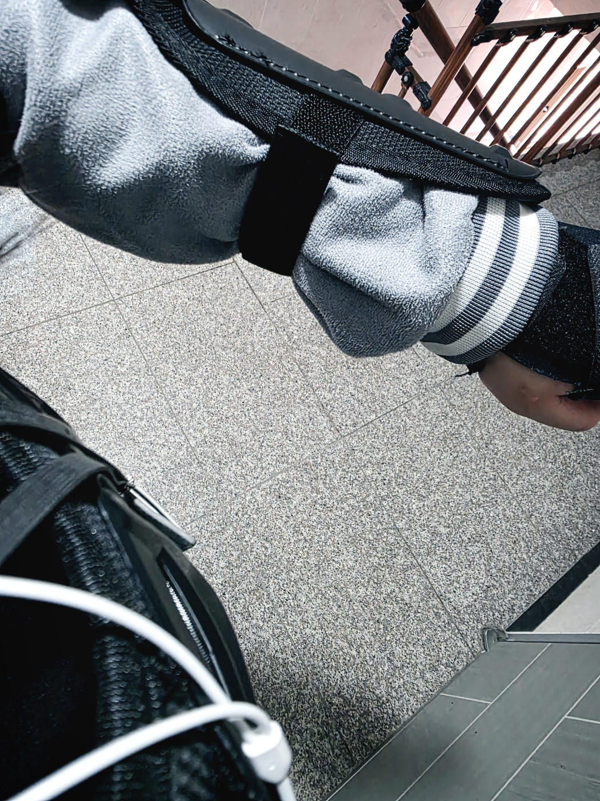

개발자 노트
·인간의 고통을 진주로 바꾸는 과정에 대하여.
프로젝트 작업 배경
시작은 발가락 골절되고 시무룩해진 상태에서 일하다가 울분이 터져서 손댔습니다. 2025.11.17.(월)현재도 왼팔에 반깁스하고 있고요.
하다보니 회계 말 바쁜 시기에 기면증 증상으로 인한 업무 차질을 최소화하는데도 도움 될 거 같더군요.
졸음 증상과 그로인한 외상(골절·염좌 등) 때문에 발생해 온 업무 효율 하락 및 부재 상황을 대비한다든지.
발 다치면 차라리 다행인데 손은 답이 없음
키보드 타자 치는 등 손가락이나 팔 쓸 일을 최소화할 수 있고, 졸려서 업무 속도와 정확도가 떨어질 때 빛을 발해 저를 도와줄 거라고 생각합니다. 마음 둘 곳도 필요했는데 쉽고 재밌는 거 하니까 스트레스도 줄고요.
이렇게 지극히 개인적인 사유에서 출발했습니다.
계획·목표
시작은 개인적인 목적이었지만 언젠가 본격적으로 사이트 개발해서 다른 분들께도 유용하게 쓰이면 좋겠습니다.
개인 작업이 공익으로 확장되는 것도 의미 있는 일이니까요.
그래서 배포를 염두에 두고 접근성이 좋은 웹페이지로 만들고 있습니다.
기존에 C++로 만들었던 실행파일(exe)은 접근성이 많이 떨어지는 듯합니다. 실제로 배포가 될지는 모르겠지만
번거로운 계산과 노가다성 업무를 자동화하여 시간 소모를 줄일 수 있다면,
질환 등으로 인해 남들보다 느린 속도로 일하는 사람도
좌절하고 포기하지 않고 조금씩이라도 계속 앞으로 나아갈 수 있을 것입니다.
발작수면 및 허탈발작 (기면증)
주 상병명: 발작수면 및 허탈발작 (Narcolepsy and Cataplexy, 기면증) / 질병코드: G47.4
증상: 상시 졸리며 갑자기 잠듭니다. 근육이 멋대로 풀려 넘어지기도 합니다.
인대 염좌랑 골절 상시 달고 다닙니다. 학교에서도 보호장비 착용하고 생활합니다.
발작의 형태가 수면으로 나타나는 질환이며, 일반적인 수면 양상과는 달라서 의지로 조절이 안 됩니다.
각성과 수면을 조절하는 뇌내 스위치가 제멋대로 24시간 딸깍거린다고 이해하시면 됩니다.
원인: 뇌의 기질적인 손상. 현대의학으로 완치 가능성은 없으며 약물 치료로 증상 강도를 줄입니다.
기면증약(각성제)를 먹어도 온전한 각성은 불가능합니다. 논문상 보고된 약효는 70% 정도.
정상성과 울타리 밖의 구성원
기면증으로 인한 이질적인 요소 외에, 애초에 사람 자체도 이상하고 일반적이지 않다, 나쁜 의미로 튄다는 평가가 지속적으로 들립니다.
근데 어차피 무난한 사회성을 가지고 있더라도 기면증과 다른 뇌신경계 질환들이 있는 한 계속 그렇게 공동체 밖에서 겉돌겁니다.
조직 내에서 절대다수를 차지하는 보통의 일반적인 사람들이 정한 정상성의 범주에서 벗어난다고 여길테니,
"저 사람은 우리와 다르다, 이상하다"라고 계속 구분지어질 것입니다.
왜냐하면 그건 관찰이 아니라 회피의 언어이기 때문입니다. 복잡한 문제를 라벨 하나로 요약해서 이마에 붙여놓고 퉁치면 에너지 소비가 훨씬 적거든요.
그래서 저는 울타리 바깥에서 스스로 만든 길을 걸어갈 것입니다. 이상하다라는 말로 규정하는 집단의 한계를 뛰어넘어 일하고 만들고 표현하겠습니다.
보호 장비
·갑옷 같고 멋있는 보호 장비. 학교에서 착용함.

『교직원을 위한 희귀질환 안내서 홍보 만화』

『나를 깨우는 목소리』